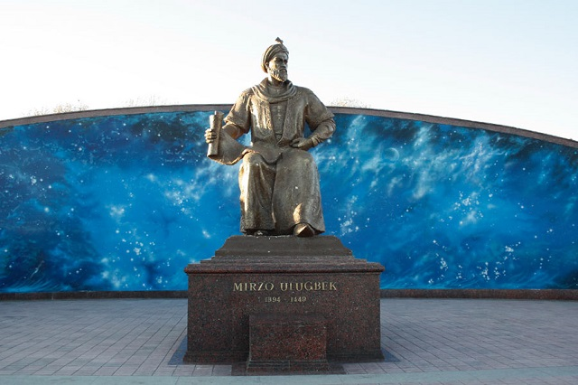

Samarkand
Samarkand is considered as on of the oldest cities in the world, and it was a key point of the Great Silk Road, and many conquerors left their mark here. It is an amazing city. One cannot put this city's all beauty and wealth into the words. Samarkand has a long and dramatic story: Samarkand was almost wiped out by the Mongols of Genghis Khan, then Tamerlan brought him back to life and made the capital of his vast empire, and under Ulugbek, the grandson of Tamerlane, many madrasahs were built in the city, so it became educational capital of the East. Almost all the unique artichectural monuments of the times of Tamerlene have been preserved here to this day.

Popular Monuments and Landmarks of Samarkand
Samarkand may not be called very popular tourist city, but travellers who reach it are delighted with the beauty of the local architecture, transferring to magical oriental tales, the hospotality of local residents, the amazing and very bright cuisine of these places.
Bibi Khanum Mosque
The name of Bibi-Khanum Mosque is very poetic as well as a legend, related with its construction. By the legend the mosque was built by the Tamerlane's favorite wife, Bibi-Khanum, in honor of his return from a trip to India.
Registan Square
The Registan Square is a real gem located in the very heart of the ancient city of Samarkand. It has gained its worldwide fame thanks to the great architectural ensemble that has become a monument of the oriental architecture.
UlughBek Observatory
UlughBek Observatory is considered as an astronomical miracle, one of the most significant medieval observatories. It was built by Ulughbek on the hilltop near Samarkand 1428-1429. During the reign of Ulugbek, Samarkand turned into one of the centers of science. He proved himself as a talented researchers in astronomy and mathematical sciences (geometry, trigonometry), well acquainted with the works of his predecessors.
